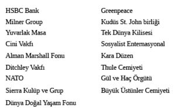

BÖLÜM 26
Beyaz Saray’ın İngilizlerce Kontrolü
İngilizlerin Beyaz Saray’daki kontrolüne en güzel örnek Churchill’in Missourili havalı Başkan Truman’a empoze ettiği “Truman Doktrini”dir. Truman en üst dereceden Mason üstadıdır. İngilizlerin gücünü anlamak için yakın tarihimizde Temsilciler Meclisi NAFTA oylamasına bakmak yeterli olacaktır. Bu oylamada Temsilciler Meclisi’nde bulunan 132 Cumhuriyetçi Parti temsilcisi oy birliği ile NAFTA’yı desteklemişlerdir.
300’ler Komitesi’nin bazı eski üyeleri ve yerlerini ölüm nedeni ile alanlar Sir Mark Turner, Gerald Villiers, Samuel Montague, Inchcape, Keswick, Pease, Schroeder, Airlie Churchill, Fraser, Lazar ve Jardine Matheson gibidirler. Bu kişiler Başkan Wilson’u I. Dünya Savaşı’nda Almanya’ya karşı savaşa sokanlardır. Bu adamlar ayrıca Başkan Roosevelt’e Pearl Harbor’a Japon saldırısını organize ettirerek II. Dünya Savaşı’na sokanlardır.
Komite Amerika’ya Kore, Vietnam ve Irak’ta savaşmasını emretmiştir. Kısacası Amerika Birleşik Devletleri bu yüzyıl pek az bilinen 300’ler Komitesi emirleriyle altı savaşa girmiştir. Gözüktüğü kadarıyla birkaç kişi dışında “Neden savaşıyoruz?” diye soran olmamıştır. Milliyetçilik, savaş marşları, bayrak törenleri, sarı kurdeleler bu büyük ulusun aklını başından almıştır. Pearl Harbor saldırısının 50. yıldönümünde Tavistock’un organize ettiği “Japonya’dan Nefret Et” kampanyası başlatılmıştır.
300’ler Komitesi’nin İngiltere üstünde baskısı o kadar fazladır ki 1700’lerden beri İngiltere nüfusunun %95’i milli gelirin sadece %25’i ile yetinmek zorunda kalmıştır. İngiltere’deki feodal lordlar buna “demokrasi” demektedirler.
Bu görünüşte nazik, efendi, centilmenler gerçekte çok acımasızdırlar. Bu adamların Hindistan, Mısır, Güney Afrika, Irak, Türkiye, İran ve Yugoslavya’da yaptıkları acımasızlıklar Yeni Dünya Düzeni – Tek Dünya Devleti kurulana kadar tüm diğer ülkelerde de tekrarlanacaktır. Bu adamlar ülkeleri işgal ederek imtiyazlı yaşamlarını devam ettirmek için işgal altındaki ülkelerin doğal kaynaklarına el koyacaklardır. Yeni Dünya Düzeni – Tek Dünya Devleti’nin elit kesimi servetleri uyuşturucu kaçakçılığı, altın, elmas, silah, bankacılık, petrol, medya ve eğlence sektörlerinden gelen İngiliz aristokrasisi ve onun Amerikalı akrabalarından oluşacaktır.
İngiliz hiyerarşisi ve siyasetindeki önemli kişiler asalet unvanlı ailelerden gelmektedirler ve asalet unvanları babadan oğla geçmektedir. Bu sistem dışarıdan İngiliz siyasetine girişleri önlemeye yarasa de bazı dışarıdan sızmalar gerçekleşmektedir.
Bu aristokratlara örnek olarak II. Dünya Savaşı boyunca Amerikan hükümetine 300’ler Komitesi emirlerini ileten İngiltere’nin Washington Büyükelçisi Lord Halifax verilebilir. Halifax’ın oğlu Charles Wood, Rothschild’lerin İngiltere kolundan Miss Primrose ile evlidir. Diğer örnekler Bank of England direktörü ve Shell Petrol şirketi büyük sermayedarları danışmanı Lord Swaythling, Montague Norman, Kraliçe Juliana ve Kraliçe Elizabeth gibidirler. Tüm bu kişiler ayrıca 300’ler Komitesi üyeleridir. Son zamanlarda Komite’ye girişte bazı eski kurallar değişmiştir. Bu gün unvan tek başına Komite’ye kabule yetmese de hâlâ kişisel gösteriş açısından önem taşımaktadır. Kapsadığı bankalar, sigorta firmaları, kuruluşlar vs. girmeden Komite’nin ne yapmak istediği ve hedeflerinin neler olduklarına bakmamız iyi olacaktır. Aşağıda verdiğim bilgileri toplamak için yıllarımı harcadım ve isimlerini sakladığım bazı arkadaşlarım sayesinde yüzlerce belge inceledim.
300’ler Komitesi her biri alanında uzman kişilerden oluşmaktadır. Uzmanlık alanları şeytana tapma, bilinci etkileyen ilaçlar gibiyken aranan uzmanlar zehir uzmanları, istihbaratçılar, bankacılar, emtia ticareti spekülatörleri, makro ekonomik dengeleri kontrol eden kişiler, iletişim ve ulaştırma gibi sektörleri yönetenler gibidirler. 300’ler Komitesi’nde ölen üyelerin yerleri aile üyelerine veya bu pozisyonu hak edenlere verilmektedir.
Üyelerin Geldikleri Bazı Bağlantılı Kurumlar:
Merkezi Haber Alma:
Tavistock Enstitüsü’nün istihbarat faaliyetleri için uzman seçtiği ve yerleştirdiği kurumlardan bazıları aşağıdaki gibidir:

Bunlardan başka yüzlerce irili ufaklı kurum ve kuruluş 300’ler Komitesi ile bağlantılıdır ve ona hizmet etmektedir. Ayrıca İngiliz monarşilerine sundukları üstün hizmetler karşılığı “sir” unvanı almış pek çok kişi de bulunmaktadır.